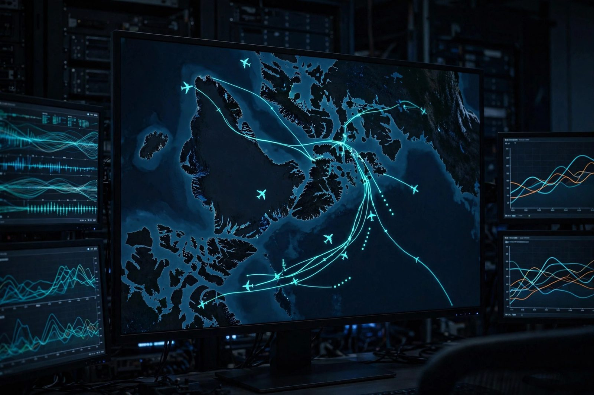

Arctic Domain Awareness Digital Twin
Streaming pipeline that fuses open ADS-B aircraft data, public AIS ship tracking, and Sentinel-1 satellite radar imagery over Canada's North, and flags anomalies such as ships that go dark or aircraft that deviate from known routes.

Overview
Canada's Arctic is vast, remote, and increasingly busy. This project builds a digital twin of the air and maritime picture over the North using nothing but open data: ADS-B aircraft beacons, AIS ship transponders, and Sentinel-1 synthetic-aperture radar imagery. All three streams flow into one pipeline that maintains a live picture of who is where, and raises flags when something looks wrong.
The two flagship anomaly detectors are dark-vessel detection (a ship that stops transmitting AIS but keeps appearing in radar imagery) and route deviation (an aircraft leaving its filed or historical corridor). Both are classic sovereignty and safety concerns in the Arctic, and both can be prototyped entirely with public data.
This is directly relevant to NORAD modernization and Canada's Arctic sovereignty agenda: the hard part is not sensors, it is fusing heterogeneous feeds into one trustworthy, queryable picture. That is a data-engineering and DevOps problem, and that is what this project practices.
Architecture
(adsb.fi / OpenSky)"] AIS["AIS ship tracks
(aisstream.io)"] S1["Sentinel-1 SAR imagery
(Copernicus Data Space)"] end subgraph Ingest["Ingestion"] P1["Poller / websocket
connectors"] end K[("Kafka
topics per source")] SP["Stream processor
(Flink / Faust)
normalise + geofence Arctic bbox"] TS[("Time-series store
(TimescaleDB)")] AD["Anomaly detectors
dark-ship, route deviation"] AL[("Alert log")] UI["Map UI
(Leaflet + deck.gl)"] G["Grafana dashboards"] ADSB --> P1 AIS --> P1 S1 --> P1 P1 --> K K --> SP SP --> TS SP --> AD AD --> AL TS --> UI AD --> UI TS --> G
Figure 1: sources, streaming backbone, storage, detection, and presentation layers.
Every source gets its own Kafka topic so a slow or broken feed never blocks the others.
The stream processor normalises all three into a common track model
(id, lat, lon, speed, heading, timestamp, source) and filters to an Arctic
bounding box before anything hits storage, which keeps the dataset small and cheap.
Anomaly Detection Logic
(e.g. 30 min)"} T -->|no| OK["No alert"] T -->|yes| Q["Query Sentinel-1 SAR detections
in last-known area + drift cone"] Q --> M{"Radar contact
with no AIS match?"} M -->|no| OK2["Likely anchored / docked
log only"] M -->|yes| ALERT["ALERT: dark vessel
confidence scored by distance + course"]
Figure 2: dark-vessel detection correlates a silent AIS track with radar-only contacts.
- Dark vessel: AIS gap + SAR contact inside the vessel's drift cone (last position plus max speed times elapsed time) raises a scored alert.
- Route deviation: aircraft tracks are compared against historical corridors; a deviation beyond a configurable distance or a heading inconsistent with the destination airport triggers review.
- Confidence scoring: distance, elapsed silence, weather/ice season, and historical behaviour combine into a 0-100 score so analysts see the most likely anomalies first.
Why an append-only event log is the backbone
Kafka-style logs are the right primitive for this twin because every detector is a stateful function of history, not of the latest message. Partitions are ordered, immutable, append-only sequences; consumers track their own offsets, so a detector can be rewound to last Tuesday and replayed after a logic change, and retention policies keep weeks of raw feed for exactly that. That matters twice here: first, gap detection is "last-seen timestamp vs now", which needs reliable history, and second, scoring a detector against labelled history means re-running it over recorded weeks rather than waiting for new anomalies. Kafka's KRaft mode removes the old ZooKeeper dependency, which makes a single-node broker practical on the homelab cluster for the prototype.
How the twin scores itself against labelled history
The discipline that keeps this honest: every alerting rule is evaluated against labelled history before it is trusted. AIS is self-reported, so "dark vessel" candidates get checked against port-call records and anchorage polygons to weed out vessels that simply docked. Route-deviation rules are tuned on months of corridor history so the false-positive rate is a number, not a feeling. No detection metrics are published yet, and the table below marks that explicitly; the plan is to publish precision and recall per rule once the ingestion connectors are feeding the log.
Stack
| Layer | Technology | Why |
|---|---|---|
| Streaming backbone | Kafka (KRaft mode) | Durable, replayable, one topic per source |
| Stream processing | Faust (Python) or Flink | Stateful windowing for gap detection |
| Storage | TimescaleDB + MinIO | Tracks in hypertables, SAR scenes as objects |
| Orchestration | Kubernetes (my homelab cluster) | Same cluster that runs my production services |
| Infrastructure as Code | Terraform + Helm | Whole stack reproducible from Git |
| Visualisation | Grafana + Leaflet map UI | Dashboards for metrics, map for the live picture |
How I'm Building It
Python connectors subscribe to the public AIS websocket stream and poll ADS-B APIs, publishing raw messages to Kafka. Sentinel-1 scenes are pulled from the Copernicus Data Space API on a schedule for the Arctic bounding box.
A stream processor maps every message to the common track model and drops anything outside the area of interest. This keeps storage and detection costs flat.
Stateful jobs hold the last-seen state of every vessel and aircraft, run the gap and deviation checks, and write scored alerts.
A Leaflet/deck.gl front end renders live tracks and alert markers; Grafana covers pipeline health (lag, throughput, alert rate).
The full stack (Kafka, processors, TimescaleDB, UI) is declared as code and deploys to my Kubernetes homelab with one apply.
How Defence Could Implement This
The same architecture scales from my homelab to an operational setting with mostly configuration changes:
- Sensor upgrade, same pipeline: swap or add feeds (military radar, satellite tasking, allied data) as additional Kafka topics. The fusion and detection logic does not change.
- Classification boundaries: the open-data prototype runs on the public internet; an operational version would run on classified networks with the same store-and-forward pattern, bridging via one-way data diodes where required.
- Redundancy for the North: Kafka's replication and Kubernetes rescheduling map directly onto the reality of remote northern sites with intermittent links; regional clusters can buffer locally and sync when links return.
- Auditability: every alert keeps its evidence chain (raw messages, detector version, confidence inputs), which matters for sovereignty reporting and after-action review.
NORAD modernization explicitly calls for better domain awareness in the Arctic. The contribution a system like this makes is not a new sensor; it is a cheap, fast way to turn existing sensors into one shared, alertable picture.
How to Build This Yourself (step-by-step guide)
- Start with one feed. Subscribe to a free AIS websocket or ADS-B API and print messages. Do not design the whole system before a single message flows.
- Add Kafka early. Even a single-node Kafka (or Redpanda) gives you replay, which you will need constantly while tuning detectors.
- Define one common track model. Every source maps into it. This one decision is what makes fusion possible later.
- Geofence at ingest. Keeping only your area of interest cuts data volume by orders of magnitude.
- Build gap detection first. It is the simplest stateful check (last-seen timestamp vs now) and immediately produces interesting alerts.
- Add SAR correlation second. Pull Sentinel-1 scenes for the area around a gap and run a simple ship detector; even a bright-pixel threshold works at prototype scale.
- Draw it on a map. A Leaflet page reading from your API makes the project real and demoable.
- Infrastructure as code from day one. Terraform + Helm from the first service, so the demo environment is never snowflake infrastructure.
Status & Roadmap
- Done: architecture design, source evaluation, common track model, homelab Kubernetes target.
- In progress: AIS + ADS-B ingestion connectors, geofenced normaliser.
- Next: gap detection, map UI, then Sentinel-1 correlation and confidence scoring.
Designed vs Built vs Measured
| Subsystem | Designed | Built | Measured |
|---|---|---|---|
| Architecture and source evaluation | Yes | Yes | Not applicable |
| Common track model | Yes | Yes | Not applicable |
| AIS + ADS-B ingestion connectors | Yes | In progress | No feed metrics yet |
| Geofenced normaliser | Yes | In progress | No feed metrics yet |
| Gap detection (dark vessel) | Yes (Figure 2) | No | No measured results yet |
| Sentinel-1 SAR correlation | Yes | No | No measured results yet |
| Confidence scoring | Yes | No | No measured results yet |
| Map UI and Grafana dashboards | Yes | No | No measured results yet |
This page makes no detection-accuracy claims. The architecture and source evaluation are done, ingestion connectors are in progress, and every "next" item above is a design or a planned validation, not a result.
How I Built It
Before writing any streaming code, I evaluated the open feeds: adsb.fi and the OpenSky Network for ADS-B, aisstream.io for AIS, and the Copernicus Data Space for Sentinel-1. The first thing built was the common track model (id, lat, lon, speed, heading, timestamp, source), because every source maps into it and fusion is impossible without it.
Kafka in KRaft mode on my homelab Kubernetes cluster, one topic per source so a slow or broken feed never blocks the others. KRaft removes the old ZooKeeper dependency, which makes a single-node broker practical for the prototype.
Python connectors subscribe to the public AIS websocket and poll ADS-B APIs, publishing raw messages to Kafka. Sentinel-1 scenes are pulled from the Copernicus Data Space API on a schedule for the Arctic bounding box.
A stream processor maps every message to the common track model and drops anything outside the Arctic bounding box before storage, keeping the dataset small and the detection costs flat.
Stateful last-seen tracking per vessel and aircraft, dark-ship gap checks, and route-deviation checks against historical corridors.
Leaflet plus deck.gl for the live picture, Grafana for pipeline health (lag, throughput, alert rate), and the whole stack declared in Terraform and Helm for a one-command deploy.
What You Need
| Category | Item | Notes |
|---|---|---|
| Hardware | A server or capable laptop | Runs Kafka, TimescaleDB, and the UI; my homelab Kubernetes cluster is the target, a single machine works for the prototype |
| Software | Kafka (KRaft), Python, Faust or Flink, TimescaleDB, MinIO, Leaflet/deck.gl, Grafana, Terraform + Helm | All open source |
| Skills | Python, SQL, streaming basics, basic GIS concepts (bounding boxes, projections) | Familiarity with Kafka offsets and replay makes detector tuning much easier |
| Accounts | Copernicus Data Space (free) for Sentinel-1; AIS websocket access (aisstream.io offers free access); ADS-B API (adsb.fi offers a free public API, OpenSky is an alternative) | Register before building the connectors; rate limits shape the poller design |
Challenges and Lessons Learned
- AIS silence is ambiguous. A gap can mean a dark vessel, a docked vessel, or a hole in receiver coverage. The lesson: never alert on the gap alone. Correlate with anchorage polygons, port-call records, and SAR imagery before scoring, which is why confidence is a 0-100 blend rather than a yes/no.
- Three feeds, three clocks, three schemas. The common track model had to come first; anything built before it would have needed rewriting once fusion started. One shared schema is the cheapest architectural decision in the whole project.
- Geofence at ingest, not in queries. Filtering to the Arctic bounding box in the stream processor keeps storage and detection costs flat as feeds grow, instead of paying for data you will throw away.
- No detection metrics exist yet, and that is honest. Route-deviation rules need months of corridor history before the false-positive rate is a number instead of a feeling. Publishing precision and recall per rule is a roadmap item, marked as a target until it is measured.
What Is Next
- Finish the AIS and ADS-B ingestion connectors and the geofenced normaliser.
- Gap detection, then the map UI so the pipeline is visible end to end.
- Sentinel-1 correlation and the 0-100 confidence scorer.
- Publish precision and recall per detection rule as measured results.
- Full stack declared in Terraform and Helm for a one-command deploy to the homelab cluster.